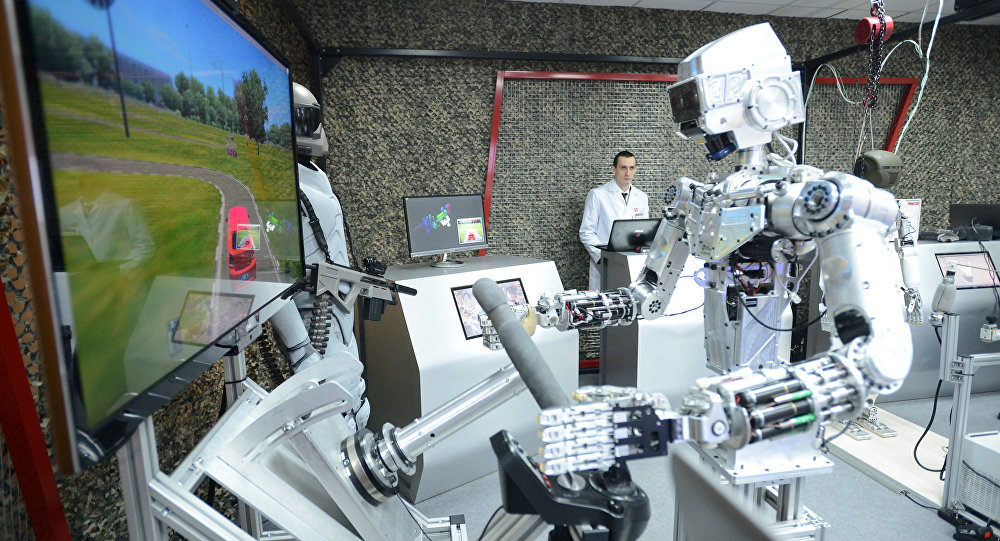
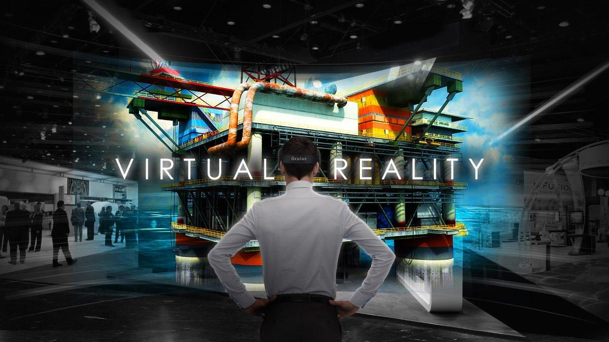
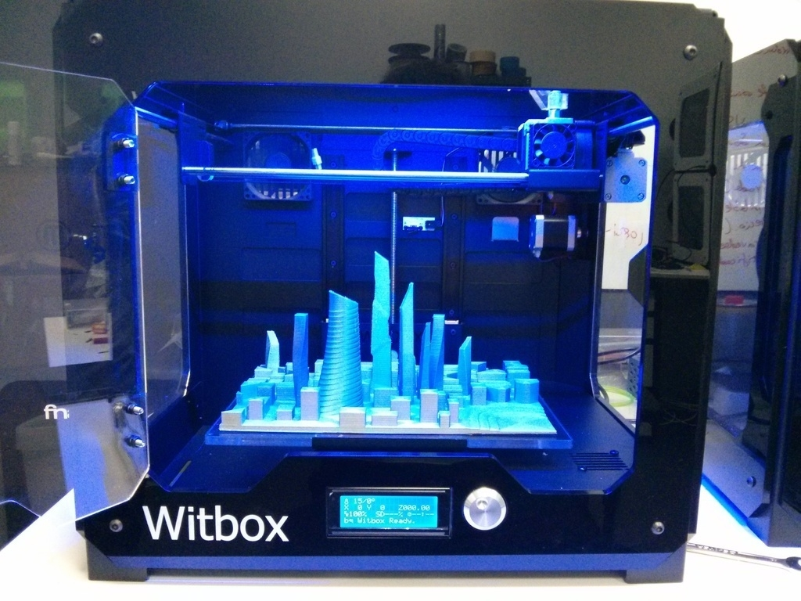

1.Robótica. Hace rato que se viene hablando de robots y que se invierte en el desarrollo de diferentes dispositivos que hacen múltiples tareas. En la actualidad hay unos 25 millones de robots móviles en todo el mundo. En un futuro no tan lejano se proyecta una inserción más exponencial tanto en ambientes domésticos como industriales. "En los próximos 15 años, se estima que 4 de cada 10 personas van a ser reemplazadas por robots para realizar tareas repetitivas como cortar el pasto o cobrar productos en el cajero del supermercado", explica Joan Cwaik, innovador tecnológico, coordinador del Centro de Divulgación Tecnológica de la Facultad de Ingeniería de la UADE y asesor de la Asociación de Marketing Directo e Interactivo de Argentina (AMDIA).
2. Realidad virtual, aumentada y mixta. Este año se comenzó a vivir con mayor intensidad lo que tiene que ver con realidad aumentada, virtual y mixta. Se empezaron a vender los cascos de realidad virtual de forma masiva y se desarrollaron más alternativas, en el marco del software, para poder vivir estas experiencias digitales que tienen múltiples usos. Además de emplearse en videojuegos, la realidad virtual también se utiliza a nivel educativo y para tratar ciertas afecciones como fobias.
3. Impresión 3D. Este tema, que ya se instaló en la agenda, va a ir progresando cada vez más. Lo más interesante, según detalla el especialista, es que esto implica una descentralización de la producción industrial. Se pone al alcance masivo la posibilidad de imprimir casi cualquier cosa. De alguna manera se democratiza el proceso productivo. "En cinco año se podrán imprimir tenedores, platos y celulares. Y al hacerse masivo se va a reducir mucho el precio de los equipos. Hoy, una impresora 3D ronda los 20 mil pesos. En 2020, quizás puede llegar a disminuir el costo en un 50%"
